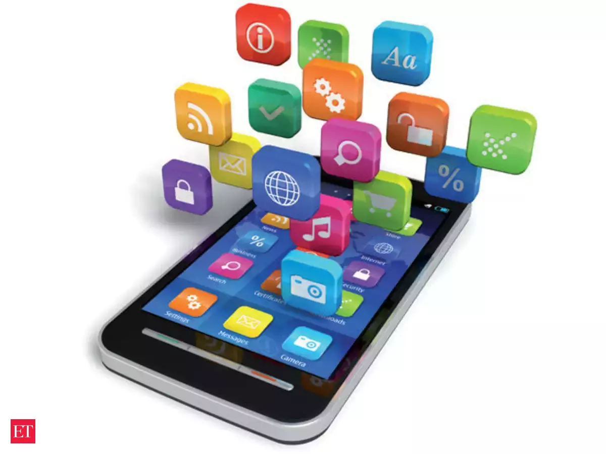

System software
System software is a type of computer program that is designed to run a computer's hardware and application programs. If we think of the computer system as a layered model, the system software is the interface between the hardware and user applications. The operating system is the best-known example of system software. The OS manages all the other programs in a computer.System software is used to manage the computer itself. It runs in the background, maintaining the computer's basic functions so users can run higher-level application software to perform certain tasks.
System software is used to manage the computer itself. It runs in the background, maintaining the computer's basic functions so users can run higher-level application software to perform certain tasks. Essentially, system software provides a platform for application software to be run on top of.
Computer manufacturers usually develop the system software as an integral part of the computer. The primary responsibility of this software is to create an interface between the computer hardware they manufacture and the end user.
Language Peocessor/Translator
A language processor, or translator, is a computer program that translates source code from one programming language to another. They also identify errors during translation. A translator is a computer program that translates a program written in a given programming language into a functionally equivalent program in a different language.
Depending on the translator, this may mean changing or simplifying the flow of the program without changing its core. This makes a program that works the same as the original.
The types of language translator are:
- Assembler
- Compiler
- Interpreter
Utility Software
Utility software is software designed to help analyze, configure, optimize or maintain a computer. It is used to support the computer infrastructure - in contrast to application software, which is aimed at directly performing tasks that benefit ordinary users. However, utilities often form part of the application systems. For example, a batch job may run user-written code to update a database and may then include a step that runs a utility to back up the database, or a job may run a utility to compress a disk before copying files.
Application software
Application software, also called application program, software designed to handle specific tasks for users. Such software directs the computer to execute commands given by the user and may be said to include any program that processes data for a user. Application software thus includes word processors, spreadsheets, database management, inventory and payroll programs, and many other “applications.” Application software is distinguished from system software, which controls a computer’s internal functioning, chiefly through an operating system, and also controls such peripherals as monitors, printers, and storage devices.
There are two types of application software.They are:
- Tailored or customed software
- Package software
The difference between application software and system software are:
| Application software |
System software |
| 1.Application Software is the type of software which runs as per user request. It runs on the platform which is provide by system software. |
1.System Software is the type of software which is the interface between application software and system. |
| 2.Application software is used by user to perform specific task. |
2.System software is used for operating computer hardware. |
| 3.Application software are installed according to user’s requirements |
3.System software are installed on the computer when operating system is installed.
|
| 4.An application software cannot run independently. |
4.System software can run independently. |
| 5. Application software is comparatively easier to develop |
5. System software is comparatively difficult to develop. |
| 6.Examples of application software include word processors, web browsers, media players, etc. |
Examples of system software include operating systems, compilers, assemblers, debuggers, drivers, etc. |
Web Based Software
Web-Based Software is software you access with just an internet connection and a web browser. There is no software or hardware to purchase, no need to download software, or ever worry about costly product upgrades.
Web-based software, often referred to as "cloud-based software" is popular and widely used because it only requires an internet connection.
Mobile Application
A mobile app (or mobile application) is a software application developed specifically for use on small, wireless computing devices, such as smartphones and tablets, rather than desktop or laptop computers.
There are several types of apps currently available.
- Gaming apps
The equivalent of computer video games, they are among the most popular types of apps. They account for one-third of all app downloads and three-fourths of all consumer spending.
- Productivity apps:
These focus on improving business efficiency by easing various tasks such as sending emails, tracking work progress, booking hotels, and much more.
- Lifestyle and entertainment apps:
Increasingly popular, these encompass many aspects of personal lifestyle and socialization such as dating, communicating on social media, as well as sharing (and watching) videos. Some of the most widely known apps such as Netflix, Facebook or TikTok fall into this category.
Other app types include mobile commerce (M-commerce) apps used to purchase goods online such as Amazon or eBay, travel apps that help a traveler in many ways (booking tours and tickets, finding their way through maps and geolocation, travel diaries, etc.), and utility apps such as health apps and barcode scanners.
